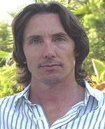

Michael Fletcher, PhD
Areas of Study
- History of Modern Philosophy (AOS: Kant’s Theoretical Philosophy)
- Philosophy of Mind
- Philosophy of Cognitive Science
- Embodied Cognition
- Cognitive Linguistics
Contact
Research Abstract
I’m currently engaged in research on Kant’s Third Critique, which combines his work on aesthetics and teleology. In my diss., I offer an interpretation that cracks the code of Kant’s aesthetics and, as a result, ties his aesthetic theory systematically to the work prior - the other two Critiques - as well as to later work in the philosophy of religion. Kant’s aesthetics and his teleology forge links with his theory of cognition as presented in the first Critique. So the implications of Kant’s aesthetic theory, in paricular to his distinction between free and dependent beauty, reach to ethics, epistemology, philosophy of religion and the philosophy of science. It’s exciting stuff.
Dissertation Summary: Dependent Beauty, Perfection, and the Morally Good in Kant’s Aesthetics
Kant is really concerned with nonideally or imperfectly rational agents, who are categorically subject to the moral law. Period. They are answerable to it come what may. Any Kant student knows this. But what Kant is up to in Sec. 16 is in fixing BEAUTY to Goodness of kind judgments in a GENERAL way, so that he can put beauty on a leash later on in a SPECIES-RELATIVE way. He wants to make sure that beauty, in particular natural beauty, TRACKS the MORALLY GOOD, so that imperfect moral strivers such as we are can enjoy what I call an “aesthetically-induced MORAL FREEBIE”. Agents who enjoy natural beauty can enjoy a passive aesthetic experience the structure of which shares certain key features with our experience of moral agency. Kant is trying to provide imperfectly rational agents with an experience in the empirical world that is similar to sensuous pleasure on the one hand, and similar to the experience of moral action on the other, which can teach them to take PLEASURE or enjoyment in freely conforming their action to objective moral rules, to duty. By delighting in natural beauty, one is subject to aesthetic experiences which, over time, can aid the dispositionally challenged moral agent who needs help and/or temporary break from his moral striving.
Aesthetic pleasure deriving from ‘the beauties of nature’ are ones that the agent can trust not to deliver him to the DARK SIDE, i.e., to be pleasure that is morally edifying, not morally corruptive. In taking pleasure ONLY in natural beauties, imperfectly rational agents can trust that the enjoyment or pleasure that they passively experience is attached to objects athat are morally santioned becasue nature is a system of ends the FINAL END OF which coincides with the FINAL END OF human beings — morally sanctioned happiness. This trust, however, is presuppositioned on the proposition that God, defined with the FULL MAGAZINE of traditional attributes, moral perfection being most prominent here, exists and has the power, smarts, and intention to set up a world that is morally-agent friendly, a world CUSTOM made for moral agents subject to a moral law which requires realization in the world.
But the idea is simple. Here we are imperfect do-gooders subject to an absolute moral law. We need help. We need rest from moral striving, and we need hellp in developing stronger dispositions to do our duty because, being corporeal, we are subject to desires, unlike perfectly rational noumenal agents. We need to some help in our MOTIVATIONAL SET, in the form of a disposition to do our duty, since we can’t rely on ourselves to ALWAYS do what is rational. So Kant has built into nature certain experiences of its products, that have the effect of being moral freebies; experiences are structually similar to the experience of agency in accord with laws, but which are not the produces of human will — hence freebies — AND are pleasant. SO in taking pleasure in experiences that are structually similar to the experience of moral striving, the imperfectly rational agent learns, gets habituated to, feel pleasure in doing his duty.
Dependent beauty comes in here because it is the ONLY beauty that presupposes a cocnept of perfection or an END-concept. And an end-concept at work in the experience of dependent beauty is DOING DUTY for the moral law. See the section on beauty as a moral symbol. The aesthetic judgment has to have the sufficient complexity to BE a symbol for morality and so it has to have precisely at least two components — an autonomy component and an FREEDOM component. So IF beauty is to serve as a symbol of morally good, it’s got to be structured in such a way as to allow experiencers of beauty to be enjoying an experience that is structucturally similar to the experience of moral agency. We need freedom and we need an operative law. Free Beauty has no operative concept of an end. So no law. So ONLY DEPENDENT beauty can function as a moral symbol and therein lies its signifcance.